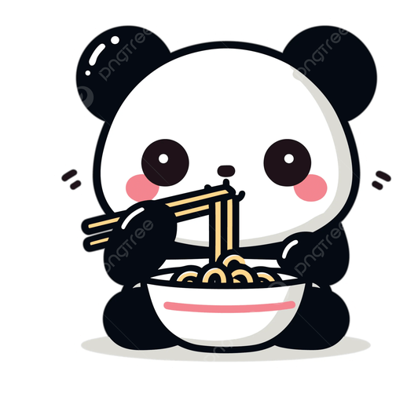
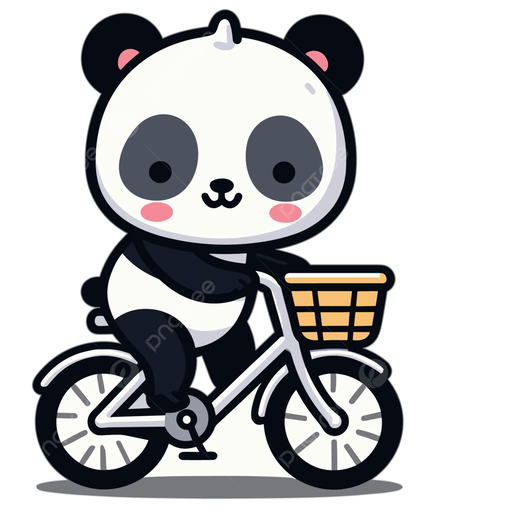
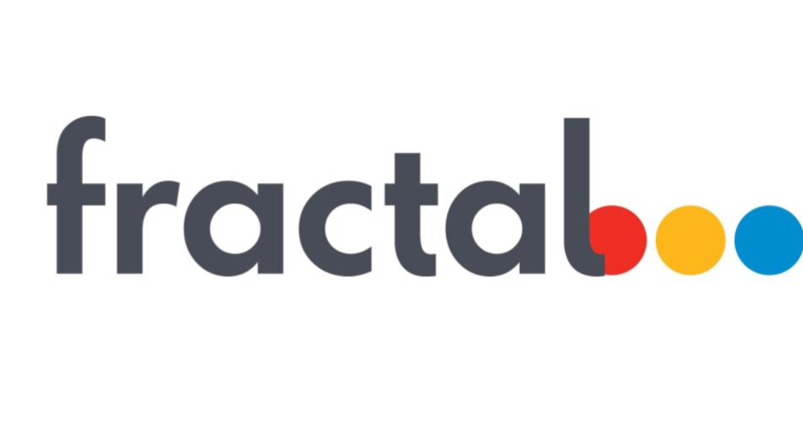
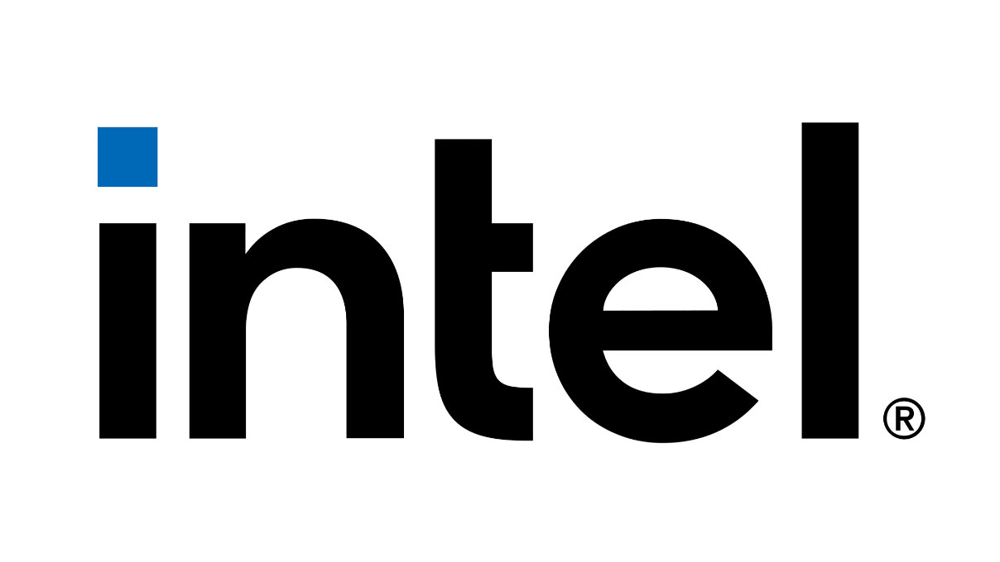
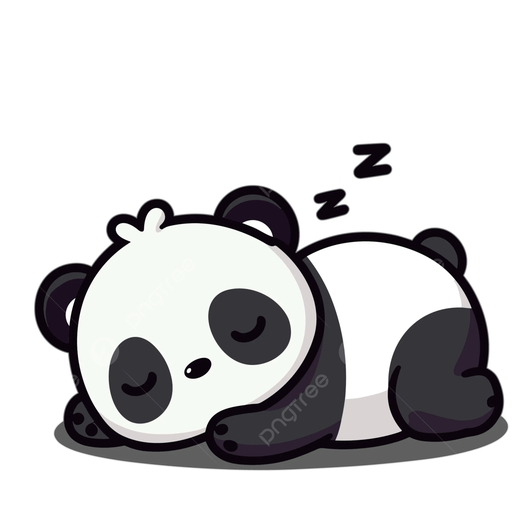

SEP Intern
JPMorganChase
Working in software engineering with enterprise-scale financial technology.
 Nirajit Pramanik
Nirajit Pramanik
AI + product engineering + creative systems
I build practical software around AI, web products, data workflows, and human-centered interfaces. My background spans fintech MVPs, generative AI strategy, CPG analytics, web systems, and communities at serious scale.

Artificial intelligence pulled me into computer science early, but building for people kept me there. I like turning research, product ambiguity, and raw workflows into interfaces and systems that feel usable.
Away from code, football, drumming, and photography shape how I think: timing, field awareness, composition, and finding the angle most people miss.

Experience
JPMorganChase
Working in software engineering with enterprise-scale financial technology.

OnestPay Inc.
Built a fintech MVP with streamlined workflows, refined user experience, and generative AI capabilities.

Accenture
Designed a strategic framework for generative AI adoption across selected sectors, including use cases, readiness, roadmaps, and regulatory considerations.

Fractal AI
Worked in CPG consulting and contributed to a GenAI chatbot for revenue growth using agents, visualization, analysis, and RAG workflows.

Intel Corporation
Selected for Intel's apprenticeship collaboration between CBSE India and NYC Singapore.
Selected projects
A football-focused AI chat interface that answers questions about players, clubs, transfers, market values, and standings using Transfermarkt data with Gemini-powered responses.
View repositoryA full expense tracking app with charts, spreadsheet mapping, debt tracking, and practical personal finance flows.
View repositoryAn intelligent karting experiment exploring how a software agent can reason about movement, control, and racing-style decisions in a constrained environment.
View repositoryA market-awareness tool for tracking stock-related news and turning fast-moving headlines into a cleaner, easier-to-scan watchlist.
View repositoryPersonal and public websites, including travel journaling, college club pages, academic calculators, and football games.
Stack
HTML, CSS, JavaScript, AngularJS, NodeJS, Flutter, Dart, Django APIs, Firebase
Python, C, C++, Java, SQL, PostgreSQL, TensorFlow, Keras, PyTorch, RAG, Generative AI
Git, AWS, Power BI, VS Code, Anaconda, data visualization, stakeholder communication
Leadership, teamwork, creative thinking, analytical problem solving, time management, multilingual communication

Contact